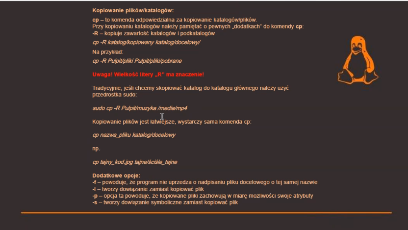
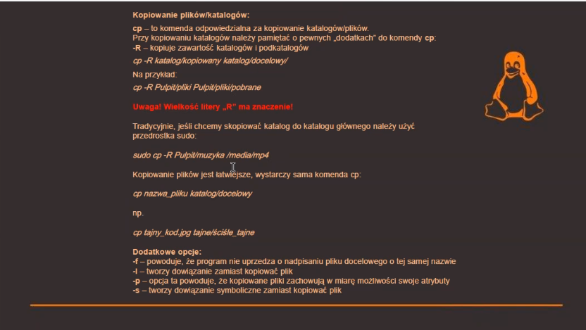

Active Directory
Active Directory - Czym jest? Co czego służy-------------------------------------------------------------------------------------------------------------------------------------------------------------------------------------------------------------------------------------------------------------------
Polecenia Windows
ip confing - podaje parametry/all
/realase
/renew - odświeża
ping (adres)
-t - pętla
-n (ilość powtórzeń)
-f -l (ilość transferu danych)
tracert - śledzi droge kontaktu z np. serwerem
-d same adresy ip
pathping (adres) - to samo co tracert tylko bez szybkości
netstat - pokazuje porty otwarte
-e statystyki naszego interfejsu
-a wyśietla wszystkie aktywne połączenia TCP oraz
porty protokołu TCP i UTP
-o AKTYWNE POŁĄCZENIA w DANEJ CHWILI (TERAZ)
net view (można też dać kompa np. \E-komp) - wyszukuje komputery w naszej sieci
Dodatkowe Materiały
Polecenia Sieciowe dla Systemu Windows
CMD - net user
-------------------------------------------------------------------------------------------------------------------------------------------------------------------------------------------------------------------------------------------------------------------
Cisco
Cisco - link 1Cisco - link 2
-------------------------------------------------------------------------------------------------------------------------------------------------------------------------------------------------------------------------------------------------------------------
VLAN'y i Przekierowania Portów
VLAN Cisco SwitchVLAN - wprowadzenie
Przekierowanie Portu
-------------------------------------------------------------------------------------------------------------------------------------------------------------------------------------------------------------------------------------------------------------------
Linux
Kurs LinuxLinux - usemod komendy
-------------------------------------------------------------------------------------------------------------------------------------------------------------------------------------------------------------------------------------------------------------------
Dzieła Malika
Linux - Rozszerzone Informacje
 
